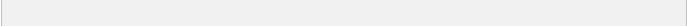

CLASSROOM NEWS
M o n t h l y N e w s l e t t e r
I n s i d e t h e I s s u e

S T U D Y I N G O R G A N I C F A R M S
A newsletter is a regularly distributed publication that is generally about one main topic of interest to its subscribers. p. 02
T H E M O N T H L Y R E C A P
A newsletter is a regularly distributed publication that is generally about one main topic of interest to its subscribers. p. 04
N E W C A M P U S R E G U L A T I O N S
A newsletter is a regularly distributed publication that is generally about one main topic of interest to its subscribers. p. 06
TIPS ON PUTTING TOGETHER A COLLEGE PORTFOLIO
b y S i e n n a R e e v e s
Newsletters are published by clubs, churches, societies, associations, and businesses—especially companies—to provide information of interest to members, customers, or employees. Google's definition of a newsletter is, "a bulletin issued periodically to the members of a society, business, or organization." Newspapers and leaflets are types of newsletters.
C O N T I N U E D T O P . 0 4